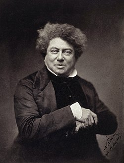
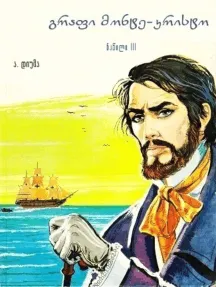

ჩემი საყვარელია წიგნია გრაფ მონტე კრისტო რომელსაც ამჟამად ვკითხულობ

(გრაფ მონტე კრისტოსტზე ინფორმაცია)
"გრაფი მონტე-კრისტო" ალექსანდრე დიუმას ერთ-ერთი ყველაზე ცნობილი და ვრცელი სათავგადასავლო რომანია. ის პირველად 1844-1846 წლებში გამოიცა.
ბევრი მისი სხვა ნაწარმოების მსგავსად, დიუმას ამ რომანშიც თავისი თანამშრომელი მწერლის, ოგუსტ მაკეს მიერ შეთავაზებული სიუჟეტები აქვს გამოყენებული. სრულიად უდანაშაულო ახალგაზრდა მეზღვაური, ედმონდ დანტესი, რამდენიმე თავისი ახლობლის მუხთლობის შედეგად ციხეში ხვდება.
აუცილებლად აღსაღნიშნია, რომ ნაწარმოები მრავალჯერ იქნა ეკრანიზებული.
მოქმედება ვითარდება ახალგაზრდა ედმონ დანტესის გარშემო, რომელიც არის გემის კაპიტნის თანაშემწე და უახლოეს მომავალში უნდა გახდეს გემის კაპიტანი. თუმცა ის ადამიანები, რომელთანაც დანტესი მეგობრობს უდანაშაულოდ დასდებენ ბრალს საფრანგეთის სამეფოს ღალატში.
ედმონს საკუთარ ნიშნობაზე აკავებენ და სამუდამოდ გზავნიან ციხესიმაგრე "იფში". ედმონი იქ 14 წელს გაატარებს და ამ დროის განმავლობაში შეშლილად გამოცხადებულ აბატ ფარიას გაიცნობს, რომელიც ბევრ რამეს ასწავლის ედმონს და ამასთან ერთად უანდერძებს უდიდეს ქონებას, რომელიც კუნძულ მონტე-კრისტოზე ინახება.
33 წლის ედმონ დანტესი ციხიდან გაქცევას ახერხებს და აბატის ქონებას პოულობს. თავდაპირველად, ყველა თავის მეგობარს ეხმარება, ხოლო შემდეგ გრაფი მონტე-კრისტოს სახელით შურისძიებას იწყებს ადამიანებზე, რომელთაც ის სამუდამო პატომრობისათვის გაიმეტეს.
(გრაფ მონტე კრისტოს ავტორი ალექსანდრე დიუმაა)
ალექსანდრე დიუმა ფრანგი დაიბადა 1802 წელს და გარდაიცვალა 1870 წელს.
იგი ფრანგი მწერალი, დრამატურგი და ჟურნალისტი. მუშკეტერების ცნობილი ტრილოგიის „სამი მუშკეტერი“, „20 წლის შემდეგ“, „ვიკონტი დე ბრაჟელონი: ათი წლის შემდეგ“, რომანის „გრაფ მონტე-კრისტო“
და სათავგადასავლო სხვა ბევრი ლიტერატურული ნაწარმოებების ავტორია.
დიუმას ლიტერატურულ მემკვიდრეობაში დრამატურგიას მნიშვნელოვანი ადგილი უკავია. იგი არის 66 პიესის ავტორი, რომელთა დიდი ნაწილი 30-40-იან წლებს განეკუთვნება.
დიუმა ისევე, როგორც სხვა რომანტიკოსი დრამატურგები, მელოდრამის ხერხებს იყენებდა და ეს მის პიესებს განსაკუთრებულ ხიბლს და სცენურობას სძენდა, თუმცა მელოდრამატიზმის ბოროტად გამოყენებას გემოვნების დაქვეითებამდე მიჰყავდა იგი. ასეთ დროს მკვლელობების, სიკვდილით დასჯის, წამების სცენების ასახვისას მწერალი ნატურალიზმში გადაეშვებოდა ხოლმე.
(ჩემი აზრი გრაფ მონტე კრისტოსტან დაკავშირებით)
ჩემი აზრით გრაფ მონტე კრისტო ძალიან საინტერესო და ასევე ცხოვრებისეული ნაწარმოებია.
წიგნში ეტაპობრივად და საინტერესოდ ვითარდება მოვლენები ერთადერთი ჩემთვის წაკითხვის დროს არაკომფორტული ის არის, რომ ნაწარმოების დროს უცბად შემოდის ახალი პერსონაჟები და ძნელია სიტუაციაში გარკვევა მაგრამ ჩემი აზრით ეგ ერთადერთი პრობლემაა. დანარჩენ ასპექტებში ძალიან საინტერესოა.
ჩემი საყვარელი მონაკვეთი წინგში დანტესის ციხეში ყოფნის დროა, მართალია დამღლელია ის თუ როგორ ცდილობს და ცოდვილობს, თავის მოკვლასაც კი აპირებდა მაგრამ იგი ხვდება აბატს რომელიც სიცოცხლის სურვილს დაუბრუნებს.